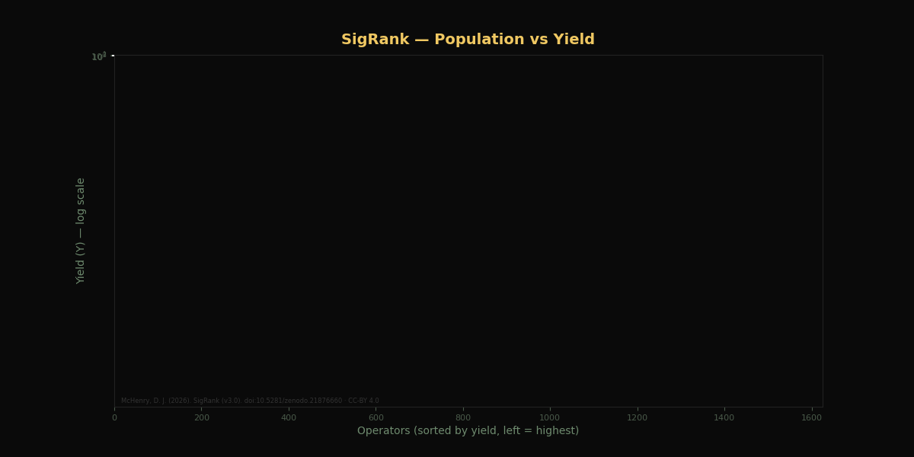
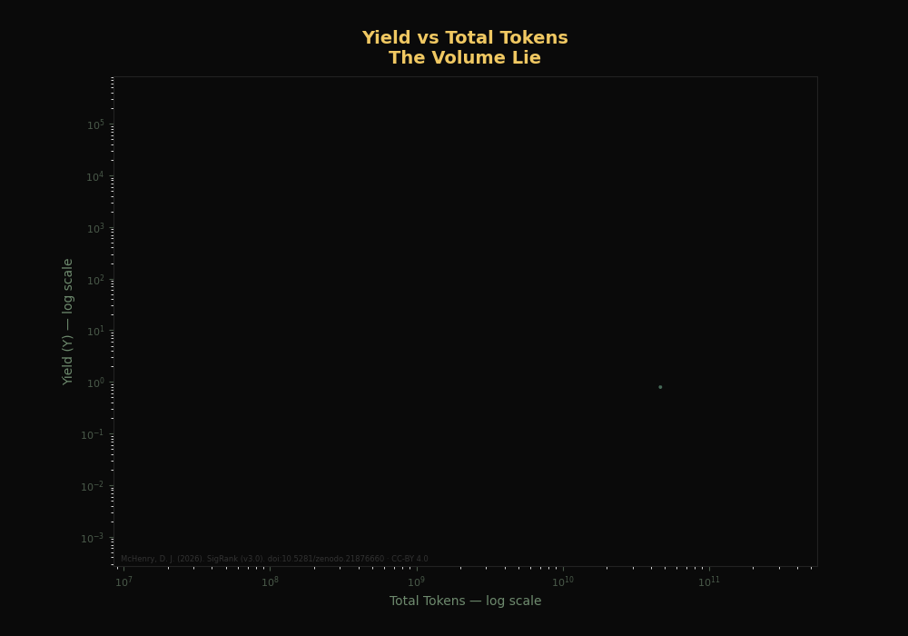
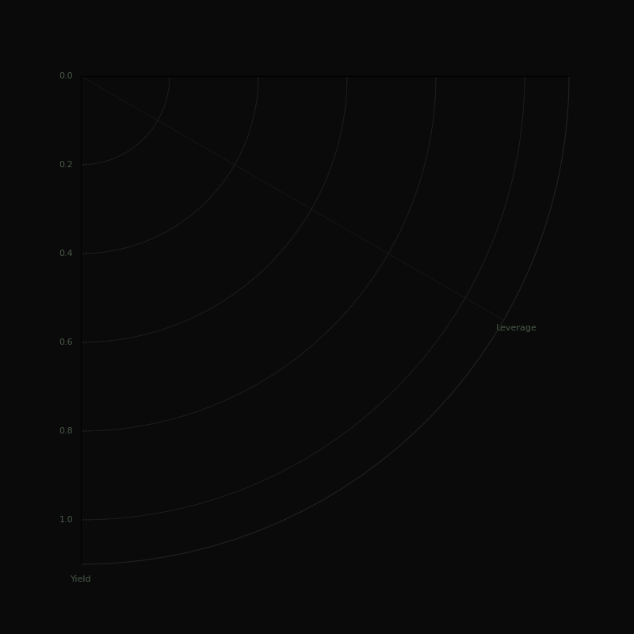
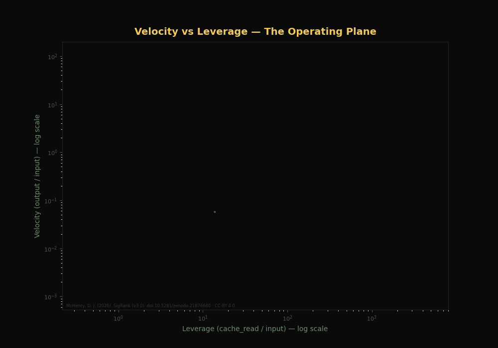
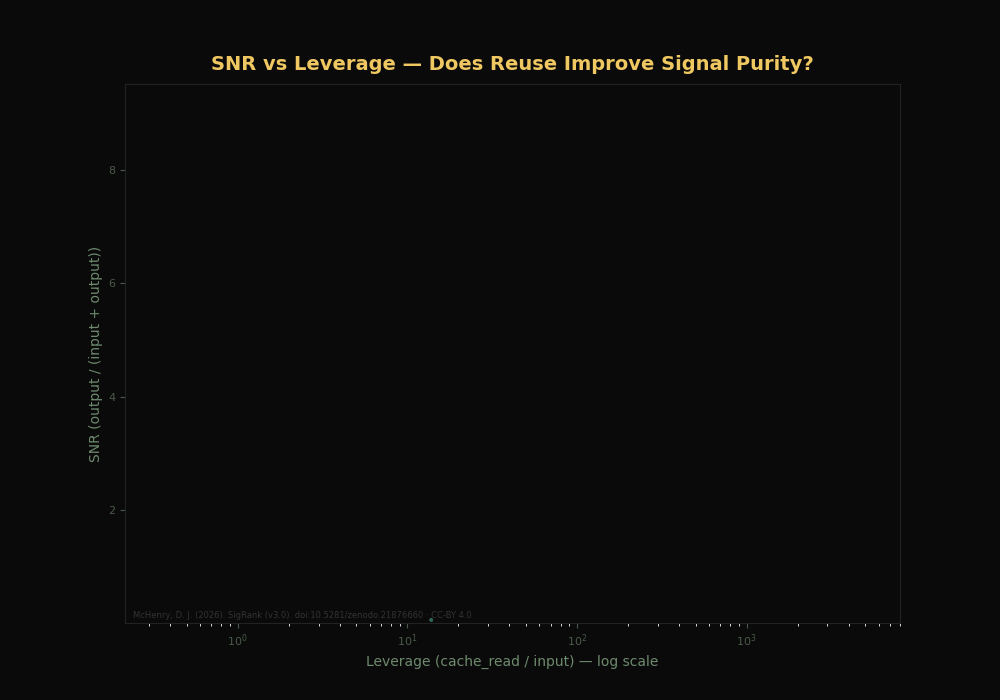
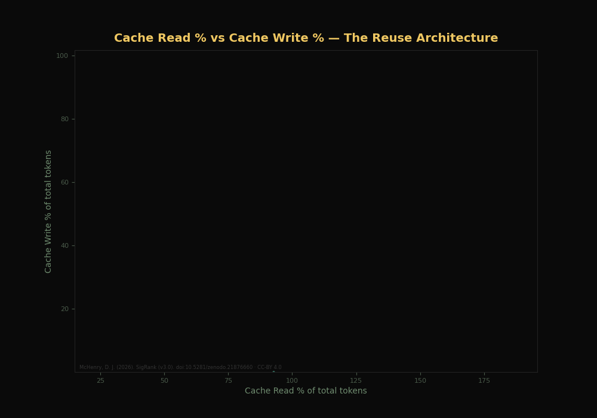
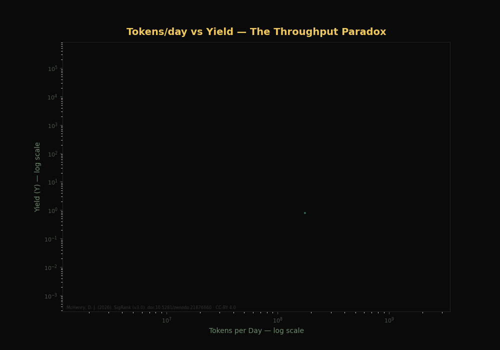
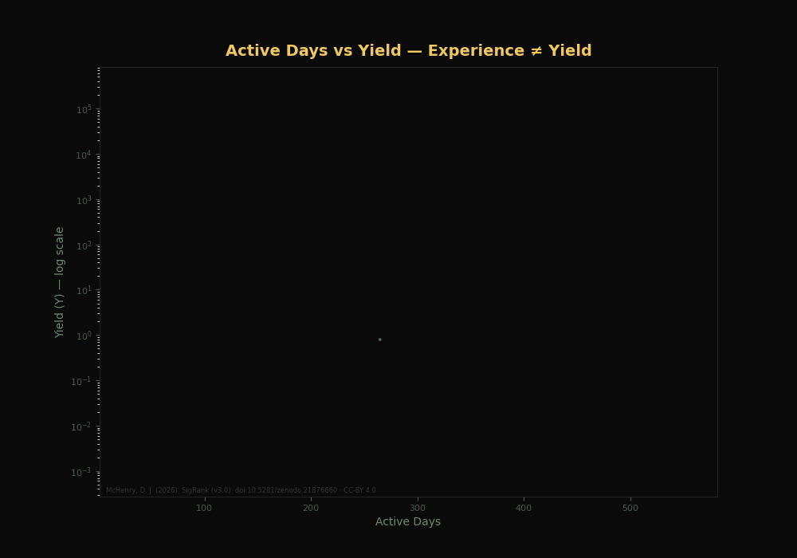
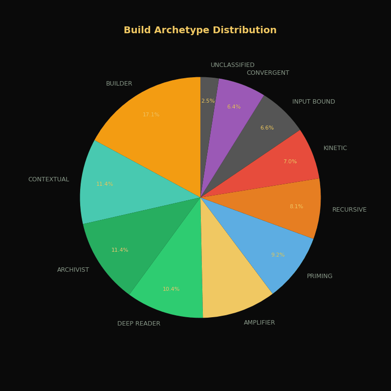
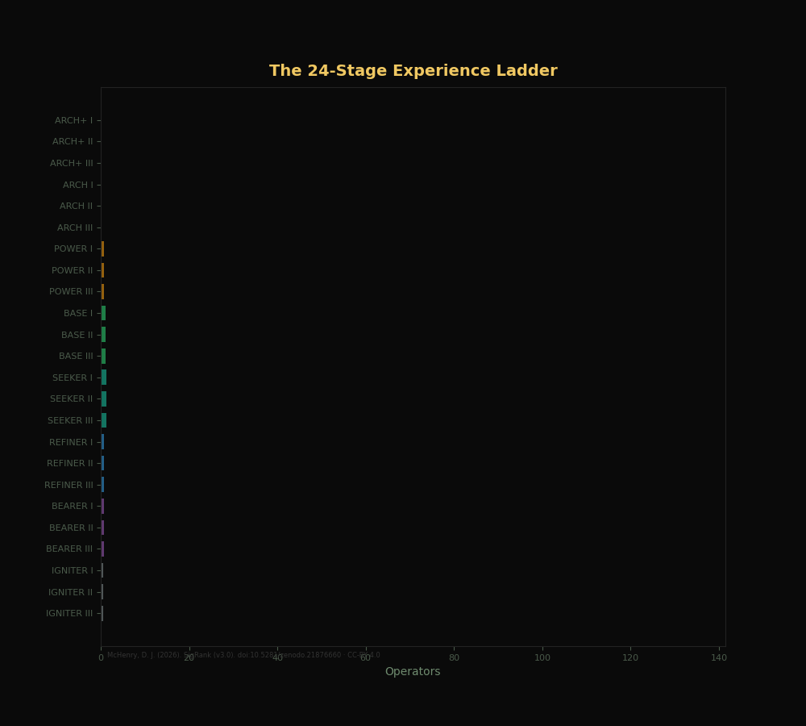

Bars grow — long tail of elite operators

Dots appear — the volume lie

4 family polygons expand from center

Dots appear — the operating plane

Dots appear — reuse vs signal purity

Dots appear — cache read % vs write %

Dots appear — tokens/day vs yield

Dots appear — experience ≠ yield

Pie grows — 10 archetypes

Bars grow top to bottom — 24 stages